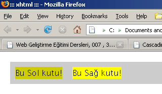

Web Geliştirme Eğitimi Dersleri, 007
3 Ocak 2008, Perşembe
FLOATING
- Elementlerin havada uçması anlamındadır!
- Parametre olarak : left | right | none değerlerini alır.
- Floating başladığı zaman, element IN-LINE duruma geçer!
- IE 6 için float eden elemetin display: inline; şeklinde ekstradan tanımlanması gerekir, aksi takdirde DOUBLE-MARGIN BUG oluşur.
- DOUBLE-MARGIN BUG margin bilgilerini etkiler. Sağdan yada soldan verilen margin kaç ise, out-put’da tam 2 katı margin halini alır.
- /* DOUBLE-MARGIN BUG örnek ( Sadece IE6 ) */
- #box
- {
- float: left;
- margin-right: 10px; /* Çıktıda bu değer 20px olarak render edilir. */
- }
- /* DOUBLE-MARGIN BUG FIX ( Sadece IE6 ) */
- #box
- {
- float: left;
- margin-right: 10px;
- display: inline; /* Fix için */
- }
- Float eden elementin içinde olduğu element’in overflow’u hidden olmalıdır. Aksi takdirde float eden element, içindi bulunduğu element’in üzerinde görünür!
- IE6’da, float eden elementin içinde olduğu element mutlaka width: değerine sahip olmalıdır.
- #middle_area
- {
- overflow: hidden;
- background-color: #ccc;
- }
- #left
- {
- float: left;
- background-color: #ff0;
- }
- HTML
- <div id="middle_area">
- <div id="left">
- <p>Bu Sol kutu!</p>
- </div>
- </div>
Hatalı Overflow IE6 - A
W3C Uyumlu Overflow - B
- Resim A’ gri background görünmüyor!
- Resim A’da #left , #middle_area’nın dışında gibi duruyor!
Ya #middle_area’dan sonra bir div daha olsaydı?
- #middle_area
- {
- overflow: hidden;
- background-color: #ccc;
- }
- #left
- {
- float: left;
- background-color: #ff0;
- }
- HTML
- <div id="middle_area">
- <div id="left">
- <p>Bu Sol kutu!</p>
- </div>
- </div>
- <div>Bu div, teorik olarak <strong>clear: left</strong> yapmış gibidir!</div>
Hatalı Overflow IE6 - A
W3C Uyumlu Overflow - B
- IE6’da, float eden div, width: tanımı olmayan bir div içinde olduğu için floating devam eder, sonra gelen div yanlış render edilir!
IE7’de sorunsuz!
Bazen bu durum canımızı çok sıkabilir. width: vermeden bazı şeyleri kolayca halletmek isterken, IE6 yüzünden, mecburen bu durumu çözmek için, dıştaki div’e ( bu örnekte #middle_area ) overflow: dışında ilave olarak width: de vermek durumunda kalırız.
- #middle_area
- {
- overflow: hidden;
- background-color: #ccc;
- width: 100%;
- }
- #left
- {
- float: left;
- background-color: #ff0;
- }

IE6 fixlenmiş hali
clear: left | right | both
Floating’i bitirmek için kullanılır. both hem left hem de right floatları bitirir.
- #middle_area
- {
- overflow: hidden;
- width: 100%;
- background-color: #ccc;
- padding: 10px;
- }
- #left
- {
- float: left;
- background-color: #cc0;
- margin-right: 20px;
- }
- #right
- {
- background: #ff0;
- }
- <div id="middle_area">
- <div id="left">
- <p>Bu Sol kutu!</p>
- </div>
- <div id="right">
- <p>Bu Sağ kutu!</p>
- </div>
- </div>
Garip Floating!
Analiz
- #left sola float ediyor.
- #left sağında 20px marjin var.
- Beklentimiz sağ’daki gibi
- #right için herhangi bir float durumu verilmemiş!
- #right için default durum sözkonusu
yani : display: block; - IN-LINE’a dönen BLOCK-LEVEL ( #left )
sağına marjin veremiyor.
Browser aptallaşıyor! - Aslında #right, kendini 100% olarak
#middle_area içine yerleştiriyor. - #left’de float etmeye çalışıyor kendini sola yerleştiriyor.
- #left’de #right’da aynı katmanda kalıyorlar.
- #left, #right’ı iterek kendini sola yapıştırıyor.
- margin-right: 20px;’de saçma bir şekilde render ediliyor.
Hayal ettiğimiz görüntü
- #middle_area
- {
- overflow: hidden;
- width: 100%;
- background-color: #ccc;
- padding: 10px;
- }
- #left
- {
- float: left;
- background-color: #cc0;
- margin-right: 20px;
- }
- #right
- {
- background: #ff0;
- float: left; /* Fix */
- }

Olması Gereken Durum
Konteyner içinde, floating var ise, peşi sıra gelicek elementlerde de ya floating: durumu olacak, yada floating kesilecek. ( clear: )
Eğer 15.satır yerine;
clear: left; yada clear: both; yazsaydık???
clear: left;
- Floating bitecek
- #right’ın pozisyonu default’a dönecek.
- Öncesindeki html elementi ne ise ( <div id="left"> )
onun altına kendini block yapacak.
clear: ile, öncesinde bulunan floating durumunu temizleriz!
display:
Bu komut ile BLOCK-LEVEL elementi IN-LINE haline getirebiliriz.
Elementleri show / hide ( göster / gizle ) yapabiliriz.
div’leri table gibi kullanabiliriz.
Herhangi bir elementi li ( list-item ) gibi kullanabiliriz.
Parametreleri
- inline
- block
- list-item
- run-in
- inline-block
- table
- inline-table
- table-row-group
- table-header-group
- table-footer-group
- table-row
- table-column-group
- table-column
- table-cell
- table-caption
- none
display: ve position: detayları bölüm 008’de...